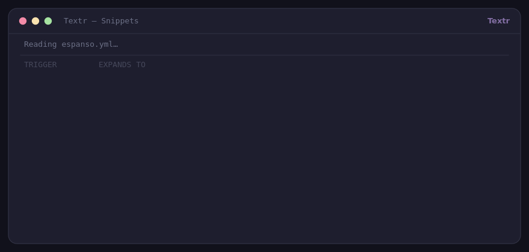

Espanso with a GUI
Espanso is a match file and a terminal. Textr is the same idea with a window: import that match file in one click, then edit every snippet in a table instead of YAML — and keep typing the triggers you already know.
One purchase, all three builds plus a starter pack. Every download button above opens the same checkout, because the bundle includes every platform.

espanso.yml and every match becomes an editable row in the manager — after that the file is just a backup.Bring your existing matches with you
Your Espanso library is a YAML match file. Textr reads it directly — no conversion script, no copying fields by hand.
- Open Library → Import Espanso file…
- Pick your
match/base.yml(or any.yml/.yamlmatch file) - Every match becomes a snippet tagged
espanso, ready to edit
Triggers you already have are skipped, never overwritten, so importing twice or merging two files can't destroy your edits. Plain, quoted, literal-block and folded YAML scalars are all understood.
Side by side
| Espanso | Textr | |
|---|---|---|
| Editing snippets | YAML in a text editor | Table + dialog, search, tags, enable/disable |
| Import an Espanso file | — | One menu action |
Prefix conflicts (:d vs :dt) | Own matching rules | Waits for the next key, longer trigger wins |
| Placeholders | {{name}} style | {name}, dates, choices, counters, {cursor} |
| Price | Free, open source | Free from source · $15 bundle |
| Platforms | Linux, Windows, macOS | Linux, Windows 10+, macOS 11+ |
What Textr doesn't do
- The import is one-way and partial. Espanso forms, scripts and hub packages don't come across, and Espanso's
{{variables}}are imported as literal text — you edit them into Textr placeholders afterwards. - No cloud sync or team sharing. Snippets are plain JSON files on your disk, which is the point.
- The binaries aren't code-signed or notarized. Windows SmartScreen and macOS Gatekeeper warn on first launch; both have a documented one-time bypass.
- On Wayland, typing goes through
ydotooland capture needs read access to your input devices — details on the Wayland page.